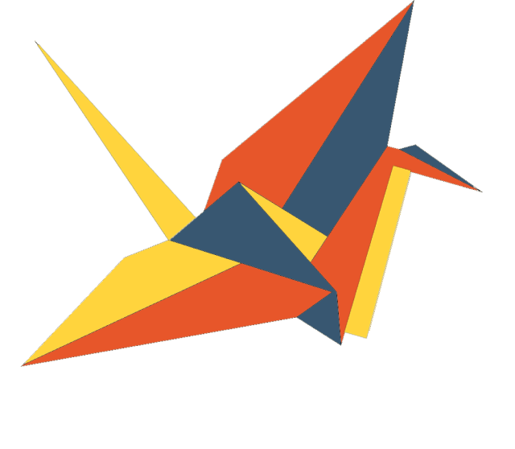
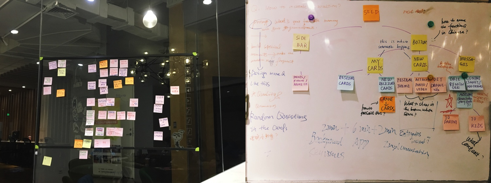
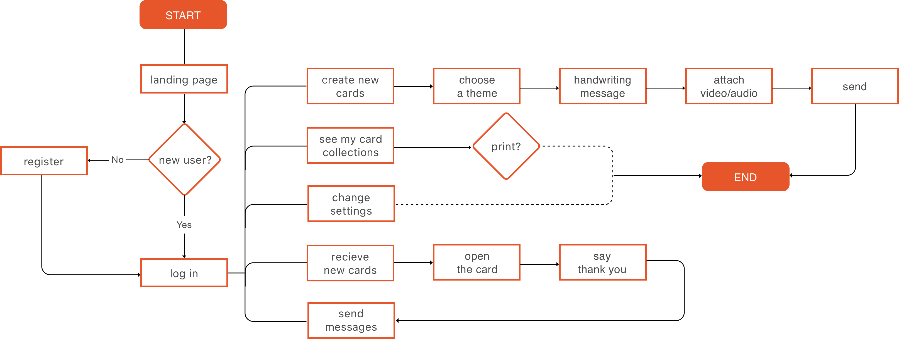
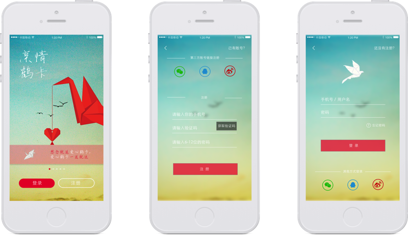
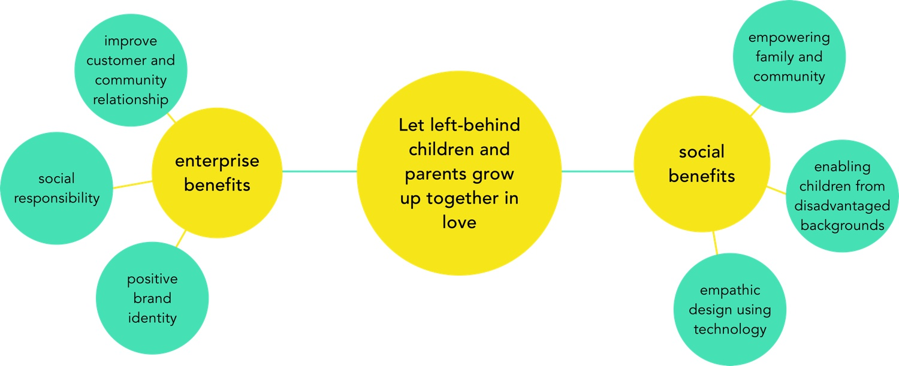
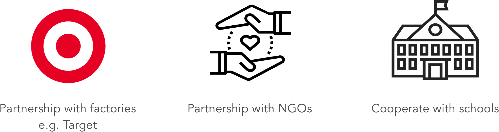

Paper Crane:
Build quality communiation between migrant parents and left-behind children
Award | Runner-up of Target Hackathon 2017
My Role | Research and Design Lead
Team Members | Sam Li, Kevin Li, Yuxin Wu
Project Description
Paper Crane is a mobile application to better facilitate communication between left-behind children and migrant parents
Background
“In contemporary China, rural-to-urban migration has affected the lives of a significant proportion of China’s children. Among the estimated 106 million children impacted by migration in 2010, 35.81 million children migrated with their parents to urban areas, while 70 million were left-behind in predominantly rural areas (UNICEF 2014)."(Yu and Luo, 307) Due to Chinese Hukou (户口) system, the mobility of these children are restricted. With such a large group of left-behind children being apart with their parents in a long term, a solution to facilitate the communication between left-behind children and their parents is urgently needed.
Yiu, Lisa, and Luo Yun. “China’s Rural Education: Chinese Migrant Children and Left-Behind Children.” Chinese Education & Society 50, no. 4 (July 4, 2017): 307–14.
Symbol and Inspiration
In a featured news story, a left-behind child named Liu Ling folds paper cranes everyday, because she believes that when she folds 1000 paper cranes, her dad will come back home. The paper crane is also a symbol of beautiful hopes and good wishes, representing that both children and parents want each other to be happy and safe everyday even though they are far away. A lot of people also write down their wishes on the back of a paper before folding it into a crane.
Target User
8-14 years old children and their parents. 8-14 is considered as “the golden reading age”. This period will have a great impact to one’s development of life values.
Research

Parent 1 Mother, 59, street cleaner
“I left home and worked in a big city when my kid was 13. My kid has already grown up. I only read a few words, so calling was the most convenient for me to communicate with my kid. ”
Parent 2 Father, 60, worker
“My child just went to a very good college. We are friends with each other. I call my son everyday, but our conversation topic is pretty cliche, mostly about his grades.”
Child 1 17, high school
“Since my second grade, my parents started working in another city and I lived with my grandparents. I don’t really miss them because it is my grandparents who raised me up too, and I don’t feel deeply attached with my parents. However, I still wish my parents can care about me in some things. For example, go to school in the morning, eat lunch during the noon, and go to sleep early at night. Little things like this can make me very happy. ”
School Headmaster Headmaster of an Elementary School in Yunnan
“In our school, left-behind children are the most ‘problematic’. A lot of them don't like studying, have bad temper, and their thoughts don’t suit their age. Usually the group of students who skip classes are left-behind children too. When we talk to them, they always blame their parents do not care about them enough about the problems they have.. ”
Communication Pain Points

Ideation
1) In order to guide parents and children to have quality communication, we chose the format of handwritten cards that can attach photos, audios and videos to it. Cards are careful collections of love that can be stored digitally or be printed out and saved physically, while text message are more scattered and lack a sense of ritual.
2) To target our specific users, we provide suggested topics that encourage both to talk about in the chatting section. In our research, we foun that a lot of parents do not know how to show their love and concern to their kids, and the scope of their communication topics is very limited. They always end up asking the same questions, such as “how’s the weather today” or “did you behave well at school”. Their ineffective way of communication gradually causes the relationship to become "frozen" between their kids in the end.
3) Educating the parents with parenting methods is also essential. A lot of migrant parents rely on school teachers and grandparents to educate their kids, which results in the lack of family education for the kids. Our app includes an education section for parents and will push articles to them daily, teaching what they should teach their kids and the techniques of effective communication. It is good to mention some topics like “reading bedtime stories” to the parents and they will figure out a way the achieve that somehow remotely. It makes parents more qualified parents and help them take in actions than simply giving their kids money.
Flow Chart
Prototype
Core Concept and Future Prospects
Feasibility and Promotion
Visit Collective Responsibility Website or Wechat Official Account to read more about the Hackathon!